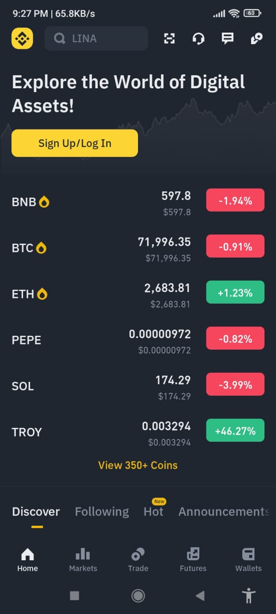

Binance is the mostly used exchange beacuse of its simplest interface.
Binance has many features within the body people buy and sell their coins directly and can make profit and loss from them within crypto different dollars are traded and their money is made different people without learning. Can't use it unless you know about the different coins in it, you'll just waste your money in it, you won't understand anything about it, crypto is a single currency. which you can use to make money if you follow good details and good advice about it. According to crypto, there are various organizations created to understand crypto through which you can understand crypto exchange.And can use it for themselves and make their own money There is so much security inside binance that if they want to convert their money from dollars to their country's money, they can sell it inside Binance. What you have to do, you have to do it sitting in front of yourself and the other person
I have a lot of security in it, if you want to create an account, first of all your CNIC number is taken and then your phone number which is registered on your CNIC. After that your fee is scanned, your thumbs are scanned, your e-scan is scanned, and a person can create only one Binance account in their lifetime, with a third-party policy in place. Because of the account of a third party is not hacked and his money is saved, you can exchange your money and seal your dollars in different ways.
Sign up your account by using Google account or by using your phone number. After verifying your account, you will be able to login with your account. This whole process will only take a few minutes.
By additional security, you will secure your account. After securing your account, you need a verification for sending or receiving assets. You can get this code from apps like Google Authenticator or via message. It's a quick process, but it helps protect your account from hackers.
In Binance, you need to verify who you are. You can upload your Government ID and take a selfie to verify your identity. It usually only takes a few hours for Binance to verify, and once it's done, you can use all the features of Binance.
Once you've set up your account, you will need to raise money to start the business. You can deposit cryptocurrencies from other Crypto Exchanges. You can buy coins by using P2P trading through third-party payments. Binance has many options, so you can choose the best one for you.
So if you're just starting out, you can stick to the basics. When you feel more comfortable, you can try out the advanced features.
You now have an account. Let's talk about how to trade well. Being a professional takes time, but with practice, you will get there!
Before starting into complicated transactions, it's important to understand the basics. For example, learn the difference between a Market Order (buy/sell at the current price). Binance has many helpful resources to help you learn, so take your time and soak it all in.
Don't put a lot of money into trading right away. It is recommended to start with a small amount of money. Binance allows you to trade in different amounts of cryptocurrencies, so you do not need to spend a lot of money. Start slowly, build confidence, and grow as you learn.
Every professional trader knows the importance of risk management. This means that you do not bet everything in one trade. One way to manage risk is to create a stop loss. If the price falls below a certain level, Stop-Loss will automatically sell your cryptocurrency, causing you huge losses. Another strategy is to set a profit point so that the price reaches the target and automatically locks in profits.
The cryptocurrency market moves quickly. Therefore, it is important to stay updated. Follow the news, read articles, and learn new trading strategies. Binance has its own Academy with many tutorials, so you can learn at your own pace. The more knowledge you have, the better you'll be at spotting opportunities and making smart trades.
The market can be volatile, and sometimes prices can fluctuate unexpectedly. So how can you protect yourself from big losses?
These orders help you to save a large amount of money. If the price drops too low, a stop loss order will automatically sell your cryptocurrency, helping you avoid big losses. Similarly, a Take-Profit order will lock in your profit once you reach your price target. Using these two tools gives you control.
Binance offers margin trading, which allows you to borrow more money to trade. Although it may seem like a good way to make more money, trading on margin is risky. If the market goes in the wrong direction, you may lose more than you invested. As a newbie, it is best to avoid margin trading until you have more experience.
Don't spend all your money in one cryptocurrency. Instead, diversify your investments across multiple assets. If one of your currencies is undervalued, other investments can help maintain balance. Think of it as not putting all your eggs in one basket.
Feeling like (fear of missing out) can cause many issues in your progress. The key is to stick to your plan. If the market is falling or there is big news, don't make hasty decisions. Trust your research and follow your strategy. Emotional trading rarely leads to success.
Finally, make sure your Binance account is secure. Use a strong password, enable two-factor authentication to secure your account from hackers, and double-check that you are on the official Binance website, especially when logging in or withdrawing.